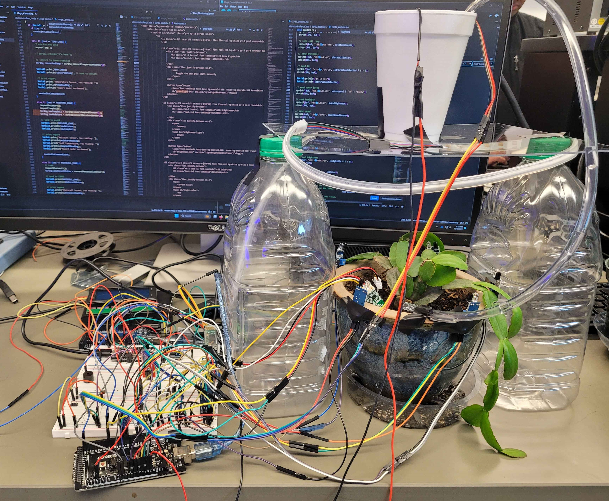

Plant Monitoring System
An IoT system to monitor your plant.
Timeline
September 2024 – December 2024
Implementation Details
Tools: Arduino Mega and ESP32 microcontrollers.
Teammate: Donald P.
Goals
An IoT-enabled Plant Monitoring System with the following features:
- Sensor Monitoring: Tracks data from sensors, including air temperature, soil moisture, soil temperature, photocell (light level), water reservoir level, smoke/flame detection, and intrusion detection.
- Automated Actions: Tracks data from sensors, including air temperature, soil moisture, soil temperature, photocell (light level), water reservoir level, smoke/flame detection, and intrusion detection.
- Watering: Automatically waters the plant when soil moisture falls below a set threshold.
- Lighting: Automatically turns on an LED grow light when detecting low-light conditions.
- Warning Alerts: Activates a buzzer to signal When the water reservoir for plant watering is empty or when birds or other potential threats are detected near the plant.
- Manual Controls:
- Turning the LED grow light on/off.
- Adjusting LED brightness and color.
- Activating the water pump for 5s.
- Activating the warning buzzer manually.
- Displaying a friendly message for the viewer.
Source Code:
Link to the GitHub repository: Plant Monitoring System
Planning
Tasks Checklist:
- Project timeline planning
- Ideas generation and research
- Preliminary system schematic sketch
- Components gathering
- System design
- Hardware design
- Software design
- Software & hardware tasks assignment
- Individual system component testing
- System integration testing
- System stress testing
- Documentation
- Demo preparation
- Project report
Design
High-Level System Diagram
High-Level System Diagram
Outcomes:
Link to the dashboard website: Plant Monitoring Dashboard
System pictures:
Assembled System
Automated LED Grow Light in the Dark
Circuit Close-Up 1
Circuit Close-Up 2
Plant Close-Up